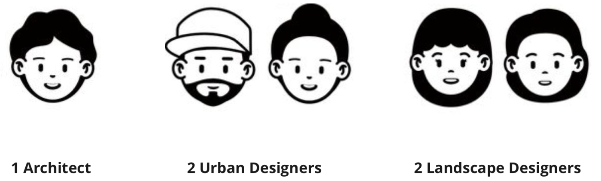

Project Overview
A note-taking tool for environmental designers tailored to site visit

As the lead and sole designer on this 0-1 startup project, I built the product from end to end. I helped define the vision and strategies for the product, and produced high quality design deliverables.
Background
Site visit is essential for designers to collect information
The Challenge
User Interviews
Emapthize with the users
I talked with five environmental designers to understand how their current site visit experience is. I asked them to describe their site visit process and the problems they had. Below are a few quotes from them before I present the synthesized learning through the user journey map.
"Site visit can be a hassle, especially when the site condition is complex."
"Sometimes we need multiple people for taking photos and marking their locations on the map at the same time."
"After a while we may run into difficulties finding the photos we need. They look similar when there's little context."
User Journey
After interviewing with the users, I had a better understanding of the whole process and users' current experience. Below is a journey map that summarizes the current experience users have throughout the five stages related to site-visit work.

Key Pain Points & Needs
After studying the journey map, I identified three key pain points and needs.
It is critical for environmental designers to associate photos and their notes to the map.
Designers have to carry different tools and drawings during the site visit. This burdens them physically and mentally when taking notes.
Difficult for them to organize, find and share the data they need for future design.
It is critical for environmental designers to associate photos and their notes to the map.
Designers have to carry different tools and drawings during the site visit. This burdens them physically and mentally when taking notes.
Difficult for them to organize, find and share the data they need for future design.
Breakdown the Problem
By identifying the key pain-points and needs, I was able to break down the original problem statement into three sub-questions to guide my design exploration. This greatly helped me and our team define the scope of MVP.

Solution
Maps + Geo-tagging + Note-taking
A multifunctional geo-tag note-taking product tailored for environmental designers that can be used on different devices.
Design and iterations
Combining map & notes seamlessly
Geographic information is crucial for users throughout the whole process. They use it to navigate during the site visit; they take and organize notes based on it, and they search notes based on it. How the geographic information is presented is critical to the overall user experience.
While seeking a way to combine Map & Note-taking, I found the UI pattern of the whiteboard collaboration tool, Miro, actually suitable for the components of SiteNote. I did a few sketches and came up with V1. The design has evolved during rounds of iterations based on the user testing results. The process is shown below.

- the overall layout is easy to understand and navigate
- very easy to see the corresponded location
- the note popup is blocking the map
- difficult to view multiples notes of one location
- better than V1, easy to view notes and their location info

- Simple layout, easy to use
Besides the major layout and interaction between maps and notes, there are some other aspects of design contributing to the experience and making it easy for users to view both notes and their geographic information.
Exploring the flows of geo-tagging
When it comes to geo-tagging, how to decide the note's location was one of the key flows I have studied. While making the note-taking simple and quick for users, we also need to consider edge cases where the current location is not accurate. I explored two design options and evaluated their pros & cons based on my test with users. I ultimately chose the second option because it requires less action from users for the most frequent task flow - taking notes without adjusting the location.


- Easy to confirm and change the location before taking notes.
- Need to confirm the location before taking each note, even when there is no need to adjust the location.


- Keep the major task flow simple by using the current location for the note’s default location.
- Help prevent user errors of accidentally change the location before taking the notes, especially when they try to take notes quickly
- More steps are needed to change notes' locations compared with option 1.
Deciding between two ways of geo-tagging
Besides presenting geographic information and notes, how to geo-tag notes is another big part of users’ note-taking experience. I explored two options. The pros & cons of both options are presented below. I ultimately chose the second option because it requires less action from users and helps prevent human errors, which meets the two design principles.
- Be able to tag the note to any location, useful for tagging photos
- Required one more step
- Required one more sProne to errors from user
- Easy and fewer actions from users
- Help prevent user errors in determining the locations
- Can only tag photos to where they are taken, but cannot tag them to the location of the object in the photos
- Be able to tag the note to any location, useful for tagging photos
- Required one more step
- Required one more sProne to errors from user
- Easy and fewer actions from users
- Help prevent user errors in determining the locations
- Can only tag photos to where they are taken, but cannot tag them to the location of the object in the photos
Designing note-taking tools per interview and survey results
To decide what note-taking tools should be included, I did some user interviews and conducted a simple quantitative survey online where I asked designers what types of notes they take during a site visit. A total of 32 surveys were completed.
The results show that the photo is the most common type of notes people collect on-site. Additionally (not displayed above), it constitutes the most of the notes for any designer. Combined with the interview result, I decided to include five main note-taking tools and make the camera button the most prominent one in the middle. In this way, the camera button can be easily pressed by the left thumb when users are holding a tablet on site.

Designing a versatile organizing system
Organizing the notes is one of the key parts, which determines how effectively notes can be used for future design and presentation. It also influences how notes will be shared.
In the first version, besides the standard search and filter function, I also designed a collection system (similar to albums) for users to organize notes. During the user test, respondents commented that they see the collection system as a top-down approach for organizing notes and they would only use it when having a clear idea or strong purpose. So they would also like to see a bottom-up approach such as a tagging system to loosely organize notes by attaching relevant labels to individual notes. Therefore, in the later version, I designed a combined system of labels and collections to fulfill the users' needs.


- straightforward and clean
- clear purpose and intention needed
- flexible but easy to start without even clear purpose
- can be messy when too many tags
- a versatile organizing system for different use cases
- a versatile organizing system for different use cases
To make organizing easy and effective, I integrated the collection and tag combined system into users’ whole process, from taking notes to utilizing notes.


How to make it easy for users to share and collaborate?
In order to make the process of sharing and collaborating more efficient, I tried to make SiteNote as self-contained as possible, which means that users should be able to work together on our platform without relying on other applications or tools. Besides allowing multiple users to view and edit, I also enable users to make comments and sticking them to specific spots on the notes.
Prototype
Results
To evaluate the effectiveness of SiteNote MVP design, I tested with 5 users and asked them to perform three tasks. The results showed that SiteNote MVP has improved the overall process of note-taking and notes management by approximately
55%


Qualitative feedback
All the users I tested with think the app is easy to use without instructions or training. They praise SiteNote as a good solution for their problems and hope to see the complete app gets built soon.
"I like the design of SiteNote. It is easy to get started with little training and instructions. It will save me a lot of time for site-visit work. I am looking forward to the complete product and use it for my work!"
--- WL, Senior Urban Designer
Next step
The next step for me is to design the remaining features in prioritized order and work closely with engineers in an agile way to build upon the MVP.
Reflection
Be critical about requests from users
Users’ feedback is precious and critical to product design. However, if you try to satisfy all their requests, your product might turn into a monster. As the sole designer on this 0-1 startup project, I learned how to take users' requests critically and constructively with the considerations of overall product strategies and technical constraints.